13. Carbon and Nitrogen Pools, Allocation, and Respiration¶
13.1. Introduction¶
CLM includes a fully-prognostic treatment of the terrestrial carbon and nitrogen cycles including interactions between these cycles as mediated by biological mechanisms of plants and soil heterotrophs. The model is fully prognostic with respect to all carbon and nitrogen state variables in the vegetation, litter, and soil organic matter. The seasonal timing of new vegetation growth and litterfall is also prognostic, responding to soil and air temperature, soil water availability, and daylength, in varying degrees depending on a specified phenology type for each PFT (see Chapter 14). The prognostic LAI, SAI, and vegetation heights are utilized by the biophysical model.
Separate state variables for C and N are tracked for leaf, live stem, dead stem, live coarse root, dead coarse root, and fine root pools (Figure 13.1 and 13.2). Each of these pools has two corresponding storage pools representing, respectively, short-term and long-term storage of non-structural carbohydrates and labile nitrogen. There are two additional carbon pools, one for the storage of growth respiration reserves, and another used to meet excess demand for maintenance respiration during periods with low photosynthesis. One additional nitrogen pool tracks retranslocated nitrogen, mobilized from leaf tissue prior to abscission and litterfall. Altogether there are 20 state variables for vegetation carbon, and 19 for vegetation nitrogen.
Figure 13.1. Vegetation fluxes and pools.

Figure 13.2: Carbon and nitrogen pools.

13.2. Carbon Allocation for Maintenance Respiration Costs¶
The carbon and nitrogen allocation routines in CLM determine the fate of newly assimilated carbon, coming from the calculation of photosynthesis, and available mineral nitrogen, coming from plant uptake of mineral nitrogen in the soil or being drawn out of plant reserves. Allocation fluxes are determined in three steps: first is used to evaluate the potential allocation of carbon and nitrogen assuming an unlimited nitrogen supply, then the actual nitrogen supply is compared against the demand, and finally allocation of carbon and nitrogen are reduced, if necessary, to match nitrogen supply and demand.
Allocation of available carbon on each time step is prioritized, with first priority given to the demand for carbon to support maintenance respiration of live tissues (section 13.7). Second priority is to replenish the internal plant carbon pool that supports maintenance respiration during times when maintenance respiration exceeds photosynthesis (e.g. at night, during winter for perennial vegetation, or during periods of drought stress) (Sprugel et al., 1995). Third priority is to support growth of new tissues, including allocation to storage pools from which new growth will be displayed in subsequent time steps.
The total maintenance respiration demand (, gC m-2 s-1) is calculated as a function of tissue mass and nitrogen concentration, and temperature (section 13.7). The carbon supply to support this demand is composed of fluxes allocated from carbon assimilated in the current timestep (, gC m-2 s-1) and from a storage pool that is drawn down when total demand exceeds photosynthesis ( , gC m-2 s-1):
(1)¶
(2)¶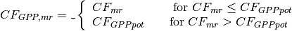
(3)¶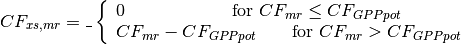
The storage pool that supplies carbon for maintenance respiration in excess of current ( , gC m-2) is permitted to run a deficit (negative state), and the magnitude of this deficit determines an allocation demand which gradually replenishes . The logic for allowing a negative state for this pool is to eliminate the need to know in advance what the total maintenance respiration demand will be for a particular combination of climate and plant type. Using the deficit approach, the allocation to alleviate the deficit increases as the deficit increases, until the supply of carbon into the pool balances the demand for carbon leaving the pool in a quasi-steady state, with variability driven by the seasonal cycle, climate variation, disturbance, and internal dynamics of the plant-litter-soil system. In cases where the combination of climate and plant type are not suitable to sustained growth, the deficit in this pool increases until the available carbon is being allocated mostly to alleviate the deficit, and new growth approaches zero. The allocation flux to (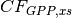, gC m-2 s-1) is given as
(4)¶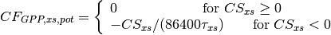
(5)¶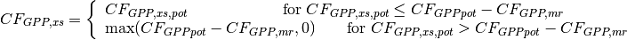
where is the time constant (currently set to 30 days) controlling the rate of replenishment of .
Note that these two top-priority carbon allocation fluxes ( and ) are not stoichiometrically associated with any nitrogen fluxes, and so this initial allocation step can proceed without reference to (or limitation from) the available mineral nitrogen supply.
13.3. Carbon and Nitrogen Stoichiometry of New Growth¶
After accounting for the carbon cost of maintenance respiration, the remaining carbon flux from photosynthesis which can be allocated to new growth (, gC m-2 s-1) is
(6)¶
Potential allocation to new growth is calculated for all of the plant carbon and nitrogen state variables based on specified C:N ratios for each tissue type and allometric parameters that relate allocation between various tissue types. The allometric parameters are defined as follows:
(7)¶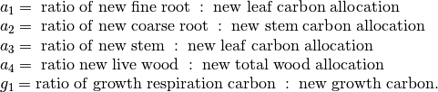
Parameters  , , and are defined as constants for a given PFT (Table
13.1), while = 0.3 (unitless) is prescribed as a
constant for all PFTs, based on construction costs for a range of woody
and non-woody tissues (Larcher, 1995).
, , and are defined as constants for a given PFT (Table
13.1), while = 0.3 (unitless) is prescribed as a
constant for all PFTs, based on construction costs for a range of woody
and non-woody tissues (Larcher, 1995).
The model includes a dynamic allocation scheme for woody vegetation (parameter = -1, Table 13.1), in which case the ratio for carbon allocation between new stem and new leaf increases with increasing net primary production (NPP), as
(8)¶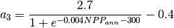
where is the annual sum of NPP from the previous year. This mechanism has the effect of increasing woody allocation in favorable growth environments (Allen et al., 2005; Vanninen and Makela, 2005) and during the phase of stand growth prior to canopy closure (Axelsson and Axelsson, 1986).
Table 13.1. Allocation and carbon:nitrogen ratio parameters
| Plant functional type | |
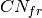 | ||||||
|---|---|---|---|---|---|---|---|---|
| NET Temperate | 1 | 0.3 | -1 | 0.1 | 35 | 42 | 50 | 500 |
| NET Boreal | 1 | 0.3 | -1 | 0.1 | 40 | 42 | 50 | 500 |
| NDT Boreal | 1 | 0.3 | -1 | 0.1 | 25 | 42 | 50 | 500 |
| BET Tropical | 1 | 0.3 | -1 | 0.1 | 30 | 42 | 50 | 500 |
| BET temperate | 1 | 0.3 | -1 | 0.1 | 30 | 42 | 50 | 500 |
| BDT tropical | 1 | 0.3 | -1 | 0.1 | 25 | 42 | 50 | 500 |
| BDT temperate | 1 | 0.3 | -1 | 0.1 | 25 | 42 | 50 | 500 |
| BDT boreal | 1 | 0.3 | -1 | 0.1 | 25 | 42 | 50 | 500 |
| BES temperate | 1 | 0.3 | 0.2 | 0.5 | 30 | 42 | 50 | 500 |
| BDS temperate | 1 | 0.3 | 0.2 | 0.5 | 25 | 42 | 50 | 500 |
| BDS boreal | 1 | 0.3 | 0.2 | 0.1 | 25 | 42 | 50 | 500 |
| C3 arctic grass | 1 | 0 | 0 | 0 | 25 | 42 | 0 | 0 |
| C3 grass | 2 | 0 | 0 | 0 | 25 | 42 | 0 | 0 |
| C4 grass | 2 | 0 | 0 | 0 | 25 | 42 | 0 | 0 |
| Crop R | 2 | 0 | 0 | 0 | 25 | 42 | 0 | 0 |
| Crop I | 2 | 0 | 0 | 0 | 25 | 42 | 0 | 0 |
| Corn R | 2 | 0 | 0 | 1 | 25 | 42 | 50 | 500 |
| Corn I | 2 | 0 | 0 | 1 | 25 | 42 | 50 | 500 |
| Temp Cereal R | 2 | 0 | 0 | 1 | 25 | 42 | 50 | 500 |
| Temp Cereal I | 2 | 0 | 0 | 1 | 25 | 42 | 50 | 500 |
| Winter Cereal R | 2 | 0 | 0 | 1 | 25 | 42 | 50 | 500 |
| Winter Cereal I | 2 | 0 | 0 | 1 | 25 | 42 | 50 | 500 |
| Soybean R | 2 | 0 | 0 | 1 | 25 | 42 | 50 | 500 |
| Soybean I | 2 | 0 | 0 | 1 | 25 | 42 | 50 | 500 |
Carbon to nitrogen ratios are defined for different tissue types as follows:
(9)¶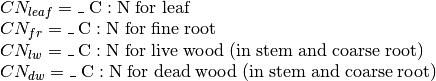
where all C:N parameters are defined as constants for a given PFT (Table 13.1).
Given values for the parameters in and , total carbon and nitrogen allocation to new growth ( , gC m-2 s-1, and , gN m-2 s-1, respectively) can be expressed as functions of new leaf carbon allocation (, gC m-2 s-1):
(10)¶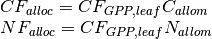
where
(11)¶
(12)¶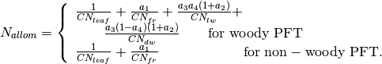
Since the C:N stoichiometry for new growth allocation is defined, from Eq. , as / , the total carbon available for new growth allocation () can be used to calculate the total plant nitrogen demand for new growth ( , gN m-2 s-1) as:
(13)¶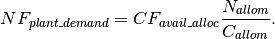
13.4. Deployment of retranslocated nitrogen¶
In many plants, some portion of the nitrogen used to construct new tissues is mobilized from senescing tissues, especially leaves, and retained within the plant when the tissues are lost as litter. This store of retranslocated nitrogen is used to supply part of the nitrogen demand for subsequent growth (Magill et al., 1997; Oikawa et al., 2005; Son and Gower, 1991). CLM includes one pool of retranslocated nitrogen (, gN m-2), and the availability of nitrogen from this pool to support new growth (, gN m-2 s-1) is proportional to the plant nitrogen demand, as:
(14)¶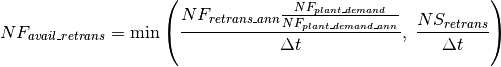
where (gN m-2 y-1) is the previous year’s annual sum of retranslocated
nitrogen extracted from senescing tissues,
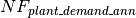 (gN m-2 y-1) is the previous year’s annual sum of
, and  t (s) is the
model’s biogeochemistry time step. This formulation produces an annual
cycle in the extraction of nitrogen from
which corresponds to the annual cycle of plant nitrogen demand, and
which is scaled to give approximately a
one-year turnover time. The minimum function prevents extraction of more
than the remaining pool of retranslocated nitrogen, which can be an
important constraint under conditions where high rates of mortality are
modifying the size of the pool. During the first year of an initial
simulation, before and
have valid values,
is set to 0.0.
t (s) is the
model’s biogeochemistry time step. This formulation produces an annual
cycle in the extraction of nitrogen from
which corresponds to the annual cycle of plant nitrogen demand, and
which is scaled to give approximately a
one-year turnover time. The minimum function prevents extraction of more
than the remaining pool of retranslocated nitrogen, which can be an
important constraint under conditions where high rates of mortality are
modifying the size of the pool. During the first year of an initial
simulation, before and
have valid values,
is set to 0.0.
The actual flux of nitrogen from the retranslocated N pool into allocation of new growth (, gN m-2 s-1) is never greater than the plant demand for new nitrogen:
(15)¶
13.5. Plant nitrogen uptake from soil mineral nitrogen pool¶
The total plant nitrogen demand is reduced by the nitrogen flux from to give the plant demand for mineral nitrogen from the soil (, gN m-2 s-1):
(16)¶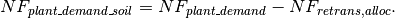
The combined demand from all PFTs sharing space on a soil column and the demand from the heterotrophic community in the soil (nitrogen immobilization demand) compete for the available soil mineral nitrogen pool. The result of this competition is passed back to the allocation algorithm as 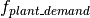, the fraction (from 0 to 1) of the plant nitrogen demand which can be met given the current soil mineral nitrogen supply and competition with heterotrophs. Plant uptake from the soil mineral nitrogen pool is then given as:
(17)¶
13.6. Final carbon and nitrogen allocation¶
The total flux of allocated nitrogen is given as:
(18)¶
From the stoichiometric relationship in Eq. , the associated carbon allocation flux is:
(19)¶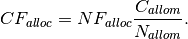
The downregulation of photosynthesis can then be calculated as:
(20)¶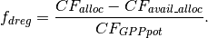
Total allocation to new leaf carbon (, gC m-2 s-1) is calculated as:
(21)¶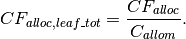
There are two carbon pools associated with each plant tissue – one which represents the currently displayed tissue, and another which represents carbon stored for display in a subsequent growth period. The nitrogen pools follow this same organization. The model keeps track of stored carbon according to which tissue type it will eventually be displayed as, and the separation between display in the current timestep and storage for later display depends on the parameter (values 0 to 1). Given and , the allocation fluxes of carbon to display and storage pools (where storage is indicated with _stor) for the various tissue types are given as:
(22)¶
(23)¶
(24)¶
(25)¶
(26)¶
(27)¶
(28)¶
(29)¶
(30)¶
(31)¶
(32)¶
(33)¶
The corresponding nitrogen allocation fluxes are given as:
(34)¶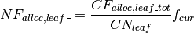
(35)¶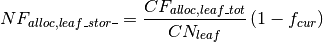
(36)¶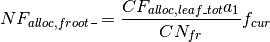
(37)¶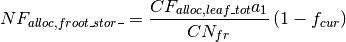
(38)¶
(39)¶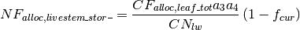
(40)¶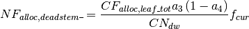
(41)¶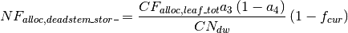
(42)¶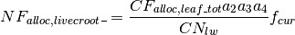
(43)¶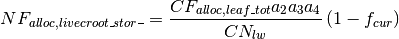
(44)¶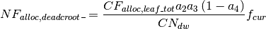
(45)¶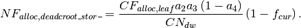
13.7. Autotrophic Respiration¶
The model treats maintenance and growth respiration fluxes separately, even though it is difficult to measure them as separate fluxes (Lavigne and Ryan, 1997; Sprugel et al., 1995). Maintenance respiration is defined as the carbon cost to support the metabolic activity of existing live tissue, while growth respiration is defined as the additional carbon cost for the synthesis of new growth.
13.7.1. 13.7.1 Maintenance Respiration¶
Under the assumption that tissue nitrogen content is a suitable index of cellular metabolic rate, maintenance respiration costs for live tissues (leaf, live stem, live coarse root, and fine root) are calculated as functions tissue nitrogen content and the relevant temperature, following the empirical relationship reported by Ryan (1991):
(46)¶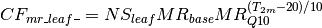
(47)¶
(48)¶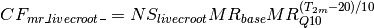
(49)¶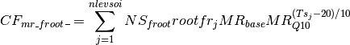
where (= 2.525e-6 gC gN-1 s-1) is the base rate of maintenance
respiration per unit nitrogen content, 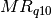 (= 2.0) is
the temperature sensitivity for maintenance respiration,
(oC) is the air temperature at 2m
height,  C) is the soil
temperature at level j, and
C) is the soil
temperature at level j, and  is the fraction
of fine roots distributed in soil level j.
is the fraction
of fine roots distributed in soil level j.
Note that, for woody vegetation, maintenance respiration costs are not calculated for the dead stem and dead coarse root components. These components are assumed to consist of dead xylem cells, with no metabolic function. By separating the small live component of the woody tissue (ray parenchyma, phloem, and sheathing lateral meristem cells) from the larger fraction of dead woody tissue, it is reasonable to assume a common base maintenance respiration rate for all live tissue types.
The total maintenance respiration cost is then given as:
(50)¶
13.7.2. 13.7.2 Growth Respiration¶
Growth respiration is calculated as a factor of 0.3 times the total carbon in new growth on a given timestep, based on construction costs for a range of woody and non-woody tissues (Larcher, 1995). For new carbon and nitrogen allocation that enters storage pools for subsequent display, it is not clear what fraction of the associated growth respiration should occur at the time of initial allocation, and what fraction should occur later, at the time of display of new growth from storage. Eddy covariance estimates of carbon fluxes in forest ecosystems suggest that the growth respiration associated with transfer of allocated carbon and nitrogen from storage into displayed tissue is not significant (Churkina et al., 2003), and so it is assumed in CLM that all of the growth respiration cost is incurred at the time of initial allocation, regardless of the fraction of allocation that is displayed immediately (i.e. regardless of the value of , section 13.5). This behavior is parameterized in such a way that if future research suggests that some fraction of the growth respiration cost should be incurred at the time of display from storage, a simple parameter modification will effect the change. [1]
| [1] | Parameter in routines CNGResp and CNAllocation, currently set to 1.0, could be changed to a smaller value to transfer some portion (1 - ) of the growth respiration forward in time to occur at the time of growth display from storage. |